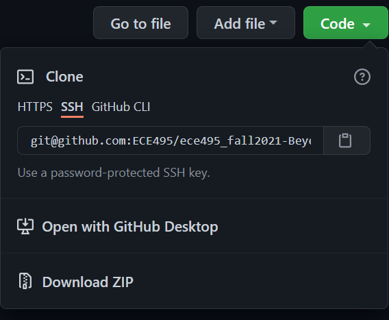

🔨 Software Setup#
📜 Agenda#
Create a GitHub repository.
Configure git repository.
Install and Configure VS Code
Note
Don’t worry if it doesn’t work right. If everything did, you’d be out of a job.
💻 Procedure#
Create a Repository within the GitHub Classroom#
If you don’t already have a GitHub account, go ahead and create one.
Once you have your account, browse to ECE487 Classroom.
Select
Accept this assignment.Browse to your repository. Note the URL for your repository (save this link; it is the best way to check if your repo is updated).
Go to
Settingsand change your repository name toece487-YourLastName, e.g.,ece487-baek.
Important
Please name your repository as ece487-LastName. This will help instructors find your repository easily.
Install Git#
To download
Git for Windowsgo to git-scm and click on the link.Run the setup file and install Git with the default settings. If you have a Mac, you don’t need to do this step because Git is already installed on your computer.
Enable SSH Connection to Your GitHub Account#
Skip this section and go here if you already have set up the SSH connection to your GitHub account.
Open
Git Bashand generate a new SSH key, replacing"your_email@example.com"with your actual GitHub email address:ssh-keygen -t ed25519 -C "your_email@example.com"
When prompted to “Enter a file in which to save the key,” hit
Enter.At the prompt for a secure passphrase, press
Enterto skip it.Start the ssh-agent in the background and add your SSH private key to the ssh-agent:
eval "$(ssh-agent -s)" ssh-add ~/.ssh/id_ed25519
Display the contents of your public key:
cat ~/.ssh/id_ed25519.pubSelect the output (ensure it include your GitHub email at the end), right click, and select
Copy.Open a web browser and sign in to your GitHub account.
In the upper-right corner, click your profile photo, then click
Settings.
In the user settings sidebar, click
SSHandGPG keys.
Click
New SSH key
In the
Titlefield, add a descriptive label for the new key, such asHP830 G7.Paste your SSH key into the
Keyfield (contents of the.pubfile).Click
Add SSH key.If prompted, confirm your GitHub password.
Clone repository to your computer#
Create a new folder named
ece487_wkspin your home directory, e.g.,C:\Users\stanley.baek\ece487_wksp.Right-click on the
ece487_wkspfolder and selectGit Bash Herefrom the menu.From the GitHub repository you created in this section, click Clone and copy the command that begins with
git cloneby clicking on thecopybutton as shown below.
Paste it within the Bash terminal (middle-click, right-click > Paste, or Shift+Ins to paste) and add a space followed by a period as shown below. The period at the end means that the destination is the current folder. Hit Enter.
If it asks for a password, enter the app password you saved in the previous step.
Note: The gif animation below has been adapted from ECE382. You must use ECE487 in place of ECE382.

The figure below shows an example of a local
ece487_wkspfolder on your computer.
Return to the Git Bash terminal. If it’s closed, right-click an empty area inside the
ece487_wkspfolder and selectGit Bash Herefrom the menu.Type
git remote -vand press Enter. You should see two lines indicatingoriginis your remote repository on GitHub for both fetching and pushing.Add the instructor’s repository as another remote source:
git remote add upstream https://github.com/ECE487/ece487-classroom-ece487_wksp.git
Verify the upstream repository has been added by typing
git remote -vand press Enter. You should now see two additional lines indicatingupstreamis the original repository you forked from.
If the instructor updates the code, you will be notified, and you will need to run
git pull upstream mainto get the latest updates.When you push or pull your code,
originwill be used by default, which points to your own GitHub repository.
Image is sourced from Stack Overflow
{kind=link}
Install and Configure VS Code#
Download Python 3.10.11. Run the file and follow the installation steps. Make sure to check the box that says
Add Python to PATH!Download and install VS Code. Choose the appropriate version for your operating system.
During installation, ensure that you check the last four boxes (see image below) to integrate VS Code with Python and Git.

To open the
ece487_wkspfolder with VS Code, right-click on the folder and chooseOpen with Codefrom the menu.Open the
Show All Commandsmenu by going to Help or pressingShift+Ctrl+P. This is a frequently used menu - remember the shortcutShift+Ctrl+P.Create a virtual environment for Python typing in the first few letters of
Python: Create Environmentin theShow All Commandsmenu and select it.Choose
Venvto create a virtual environment.Select the Python path that you want to use.
Choose
requirements.txtto install the Python packages for this course.Wait for a few minutes until all the packages are installed.
Click the gear icon at the bottom-left corner and select
Settings.Select the
workspacetab and click the page icon at the top-right corner. This will opensettings.jsonOpen
vscode.md, copy the code inside the curly braces, paste it intosettings.json, and save the file. This ensures the virtual environment starts automatically when you open the workspace.
Commit and Push Your Update#
Open
README.mdand enter your name as the author. Save the file by pressingCtrl+s.You should see a number 1 next to the
Source Controlicon. Click on the icon and type initial commit in the message box, and then click the arrow next to theCommitbutton. SelectCommit & Pushfrom the dropdown menu.
You can accomplish the same steps in
Git Bash.Open
Git Bashand typegit add -A git commit -m "Initial commit." git push
Press
Enterafter each command.If prompted, enter your GitHub username and password.
Tip
There are also many third-party graphical user interface (GUI) clients for Git. Explore options at Git-SCM GUIs.
Attention
It is your responsibility to verify that your files have been successfully pushed to your GitHub repository. Always visit your GitHub repository after pushing your assignments to ensure everything is correctly uploaded.
🚚 Deliverables#
Take screenshots of the following and submit them via Gradescope. Use Snip & Sketch (Win+Shift+S) on Windows 10 or Shift+CMD+4 in Mac to capture the screenshots. Save them in png or jpg format.
Warning
Do not take pictures of your computer screen using a mobile device or camera. Doing so will indicate a lack of understanding of sampling aliasing (covered in ECE215 & ECE333), and you will lose 30 points. Yes, I’m serious about this.
Deliverable 1#
Push your updates to GitHub
Deliverable 2#
Provide a screenshot of your VS Code as shown below. Ensure that the
.venvand.vscodefolders are visible under theEXPLORERwindow.